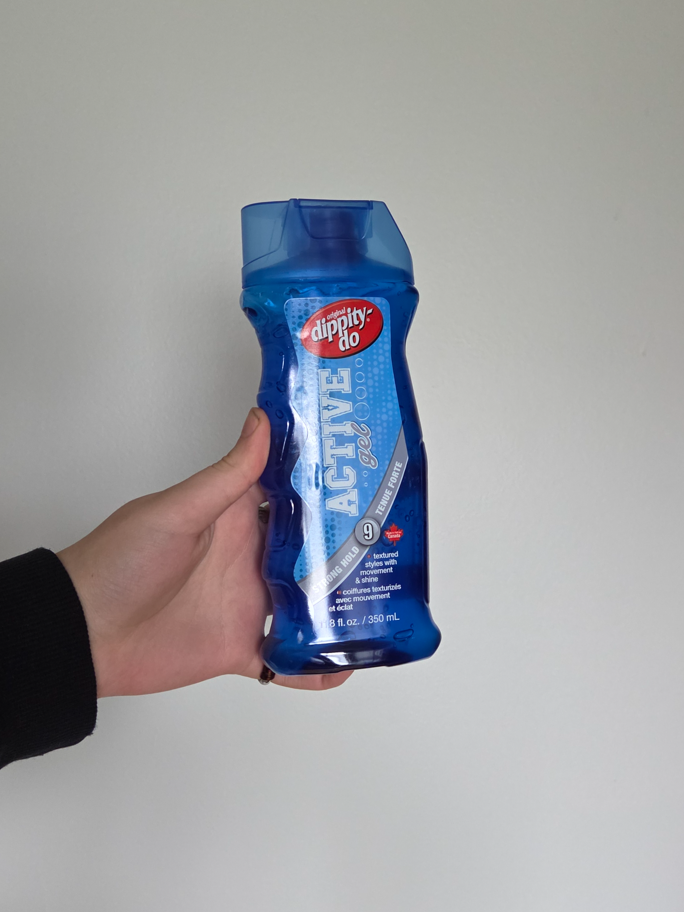
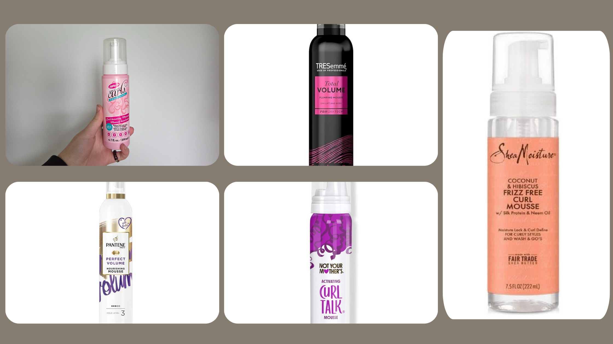

The products you choose to use in your hair play a major role in determining how your hair will look, feel, and behave over time. With countless products available on the market, each designed to suit different curl patterns, hair types, and levels of porosity, it’s important to understand your hair’s unique needs before you begin your hair care journey. Whether your hair is fine or thick, low porosity or high porosity, knowing these details will make it much easier to select products that truly support healthy growth, definition, and moisture retention. Taking the time to learn about your hair and experiment with what works best for you can save you frustration and help you achieve your hair goals more effectively.
Curl Creams
There are so many different types of curl creams available, ranging from thick, rich formulas to lighter, more fluid options. Choosing the right one really depends on your hair’s individual characteristics, especially its thickness and texture. If your hair is fine or has looser curls, using a cream that's too heavy can actually weigh your curls down, making them look flat and causing them to lose their natural shape and bounce. On the other hand, if you have thicker or coarser hair, a richer cream might be exactly what you need to deeply hydrate and define your curls.
Curl creams play a crucial role in maintaining the health and appearance of curly hair. In addition to defining curl patterns, they help lock in moisture, which is essential for preventing dryness and breakage. By keeping your hair properly moisturized, curl creams also reduce frizz, leaving your curls looking smoother and more polished. Another benefit is that they help your style last longer between wash days, making your hair routine easier and more manageable. Finding the right curl cream may take a bit of trial and error, but once you do, it can make a huge difference in how your curls look and feel every day.
Products I recommend are Shea Moisture, Skala, Bondi boost, Not You Mothers, and Carols daughter!

Hair Gel
Hair gels are an essential styling product for maintaining the shape and definition of curls throughout the day. They work by providing hold, helping your curls stay in place and resist frizz and humidity. When applied to wet or damp hair, the gel coats the strands and, as your hair begins to dry, it creates a cast or hard shell around the curls. This cast can feel stiff or crunchy to the touch, but it plays an important role in locking in the curl pattern. Once your hair is fully dry, you can gently "scrunch out the crunch" by lightly scrunching your hair with your hands and a hair oil of your choice. This process breaks the gel cast and leaves behind soft, defined, and long-lasting curls with plenty of bounce and movement.
Personally, I prefer using a strong-hold gel because my hair is on the thicker side and tends to need a bit more control to keep the curls intact throughout the day. Strong-hold gels offer better longevity and can combat frizz more effectively, especially in humid or windy weather. However, if your hair is finer or you prefer a softer, more voluminous look, you might opt for a lighter-hold gel. Lighter gels tend to give curls a fluffier, more touchable finish, but they may not provide as much frizz control or lasting definition, especially in more challenging weather conditions. It’s all about finding the right balance based on your hair type, the look you're going for, and your daily styling needs.
The products I recommend for gels are Dippity Do Gel, Not Your Mothers, and Eco Gel.



Hair Mousse
Hair mousse is a styling product primarily used to add volume, lift, and light hold to the hair. In the context of curly hair, mousse can be a helpful finishing step after applying curl cream and gel. Once you've applied your cream to define your curls and your gel to lock in the shape, you can work mousse through your hair from roots to tips to boost volume and enhance your overall look. Mousse typically comes in a lightweight foam formula that’s easy to distribute evenly without weighing down the hair.
There are many different types of mousses available on the market, ranging from those that offer a strong hold to those specifically designed to maximize volume or enhance texture. Some formulas are infused with ingredients that provide additional benefits, like frizz control, heat protection, or moisture retention.
That said, mousse isn’t considered a crucial step in the curly hair styling routine for everyone. Many people choose to skip it, especially if they already have naturally voluminous curls or are satisfied with the results from their curl cream and gel alone. However, for those who want an extra lift at the roots or a bit more fullness throughout their hair, mousse can be a great addition to the routine. It really comes down to your personal hair goals and what works best for your curl type and texture.
The mousses I recommend are Tresemme, Pantene, Not Your Mothers, Shea Moisture

Hair Oil
The finishing step in a curly hair routine is often the use of hair oil. Hair oil serves multiple purposes, making it a valuable addition to your styling process. One of its main uses is to help break the gel cast that forms after applying styling gel. Once your curls have dried and the gel has set, applying a small amount of oil to your hands and gently scrunching your hair helps soften the cast, reduce crunchiness, and bring out touchable, shiny curls. In addition to this, hair oil helps to reintroduce moisture and seal it into your hair, which is especially beneficial for people whose curls tend to dry out quickly.
Curly hair, by nature, is often more prone to dryness due to its structure, which makes it harder for natural scalp oils to travel down the hair shaft. That’s why incorporating hair oil into your routine, particularly in the mornings and evenings, can make a significant difference in the overall health and appearance of your curls. Using a satin or silk bonnet at night in combination with a lightweight oil helps reduce friction, retain moisture, and keep your curls soft and defined while you sleep.
There are different types of hair oils available, allowing you to choose one based on your hair’s specific needs. For example, if you have very dry or damaged ends, a thicker oil like castor oil or argan oil can provide deep nourishment and help improve elasticity. If your hair is finer or you're looking for a more lightweight finish, oils like jojoba or grapeseed are great options that won’t weigh your curls down.
The oils I use are from Shea Moisture, Moroccan Oil and Mielle